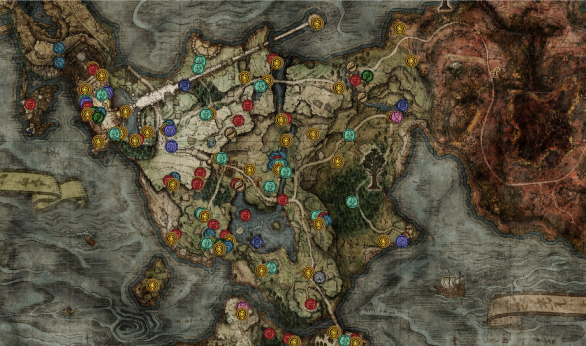
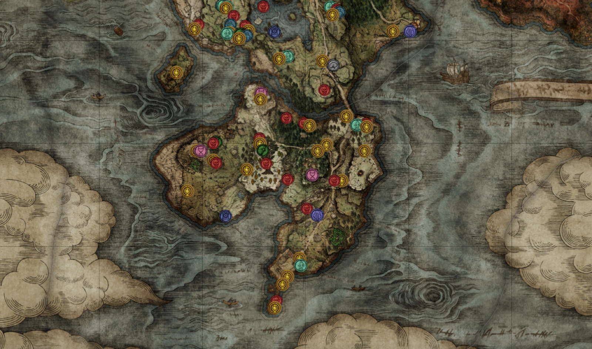

Limgrave
 - Chapel of Anticipation
- Stranded Graveyard & Cave of Knowledge
- Church of Elleh
- Gatefront Ruins
- Groveside Cave
- Limgrave Tunnels
- Night's Cavalry (Glaive)
- Stormgate
- Stormhill Shack
- Warmaster's Shack
- Deathtouched Catacombs
- Summonwater Village
- Third Church of Markia
- Artist's Shack
- Stormfoot Catacombs
- Coastal Cave
- Church of Dragon Communion
- Flying Dragon Agheel
- Dragon-Burnt Ruins
- Murkwater Cave
- Murkwater Catacombs
- Highroad Cave
- Waypoint Ruins
- Misstwood Ruins
- Minor Erdtree
- Fort Haight
- Agheel Lake South
- Forlorn Hound Evergaol
- Tree Sentinel
- Deathbird (Limgrave)
- Stormhill Evergaol
- Siofra River Well
- Fringefolk Hero's Grave
- Margit, the Fell Omen
- Stormveil Castle
- Divine Tower of Limgrave
- Bridge of Sacrifice
- Night's Cavalry (Flail)
- Oridys's Rise
- Impaler's Catacombs
- Forest Lookout Tower
- Earthbore Cave
- Ailing Village
- Callu Baptismal Church
- Morne Tunnel
- Demi-Human Forest Ruins
- Tombsward Catacombs
- Minor Erdtree
- Church of Pilgrimage
- Tombsward Ruins
- Weeping Evergaol
- Fourth Church of Marika
- Tombsward Cave
- Witchbane Ruins
- Isolated Merchant's Shack
- Tower of Return
- Wandering Mausoleum
- Castle Moorne
- Deathbird (Weeping Peninsula)